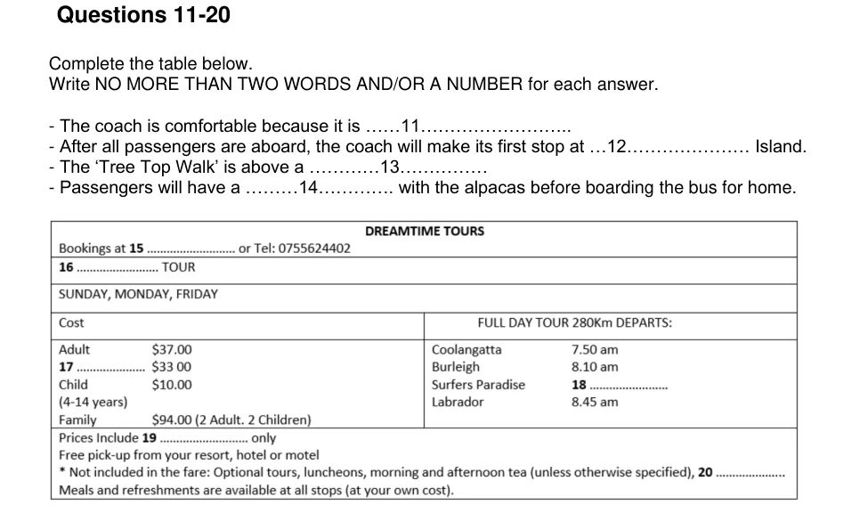
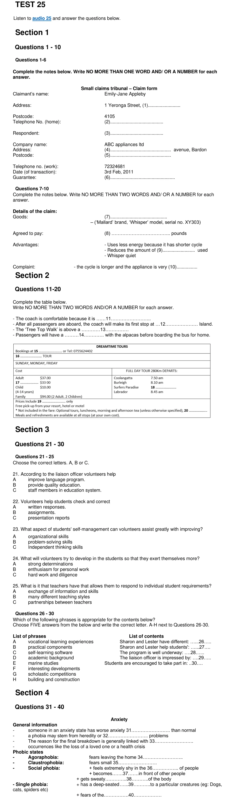

IELTS Listening: Test 25
Listening and questions
Section 1Questions 1–10
Questions 1–6
Complete the notes below. Write NO MORE THAN ONE WORD AND/ OR A NUMBER for each answer.
Small claims tribunal – Claim form
Claimant’s name: Emily-Jane Appleby
Address: 1 Yeronga Street, 1
Postcode: 4105
Telephone No. (home): 2
Respondent: 3
Company name: ABC appliances ltd
Address: 4 avenue, Bardon
Postcode: 5
Telephone no. (work): 72324681
Date (of transaction): 3rd Feb, 2011
Guarantee: 6
Questions 7–10
Complete the notes below. Write NO MORE THAN TWO WORDS AND/ OR A NUMBER for each answer.
Details of the claim:
Goods: 7
– (‘Mallard’ brand, ‘Whisper’ model, serial no. XY303)
Agreed to pay: 8 pounds
Advantages: - Uses less energy because it has shorter cycle
Reduces the amount of 9 used
Whisper quiet
Complaint: - the cycle is longer and the appliance is very 10
Section 2Questions 11–20

Section 3Questions 21–30
Questions 21–25
Choose the correct letters. A, B or C.
21 According to the liaison officer volunteers help
22 Volunteers help students check and correct
23 What aspect of students' self-management can volunteers assist greatly with improving?
24 What will volunteers try to develop in the students so that they exert themselves more?
25 What is it that teachers have that allows them to respond to individual student requirements?
Questions 26–30
Which of the following phrases is appropriate for the contents below?
Choose FIVE answers from the below and write the correct letter. A-H next to Questions 26-30.
List of phrases List of contents
A vocational learning experiences Sharon and Lester have different: 26
B practical components Sharon and Lester help students': 27
C self-learning software The program is well underway: 28
D academic background The liaison officer is impressed by: 29
E marine studies Students are encouraged to take part in: 30
- F interesting developments
- G scholastic competitions
- H building and construction
Section 4Questions 31–40
Questions 31–40
Anxiety
General information
someone in an anxiety state has worse anxiety 31 than normal
a phobia may stem from heredity or 32 problems
The reason for the final breakdown is generally linked with 33
occurrences like the loss of a loved one or a health crisis
Phobic states
Agoraphobia: fears leaving the home 34
Claustrophobia: fears small 35
Social phobia: + feels extremely shy in the 36 of people
+ becomes 37 in front of other people
+ gets sweaty 38 of the body
Single phobia: + has a deep-seated 39 to a particular creatures (eg: Dogs, cats, spiders etc)
+ fears of the 40
Show the original book pages (picture)

Tap or click the pages to open them full size in a new tab.
Check your answers
Marking ignores capital letters and accepts plurals and the usual alternative answers. If your answer is right but not accepted, press My answer is also right under it.
Tapescript
Check your answers first, then the tapescript opens here.